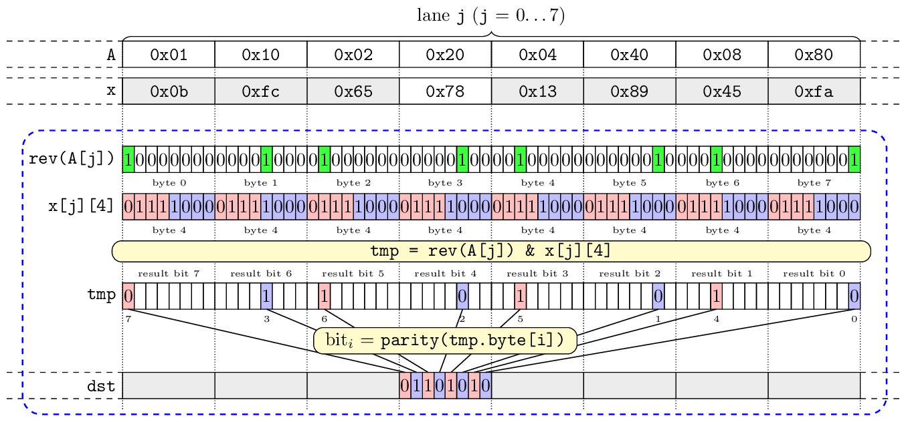

| Author: | Wojciech Muła |
|---|---|
| Added on: | 2020-01-19 |
Contents
This article was inspired by Geoff Langdale's text Why Ice Lake is Important (a bit-basher’s perspective). I'm also grateful Zach Wegner for an inspiring discussion.
The AVX512 extension GFNI adds three instructions related to Galois field:
While the two first instructions perform quite specific algorithms, the third one is the most generic and promising.
Below is a C-like pseudocode for VGF2P8AFFINEQB. The main properties of the instruction are:
// x, A -- input vectors // imm8 -- 8-bit constant __m512i _mm512_gf2p8affine_epi64_epi8(__m512i x, __m512i A, uint8_t imm8) { for (j = 0; j < 8; j++) { qword_A = A.qword[j]; qword_x = x.qword[j]; for (i = 0; i < 8; i++) { uint8_t tmp = affine_byte(qword_A, qword_x.byte[i]); res.qword[j].byte[i] = tmp ^ imm8; } } } uint8_t affine_byte(uint8_t qword[8], uint8_t byte) { uint8_t res = 0; for (i=0; i < 8; i++) { uint8_t x = qword[7 - i] & byte; res.bit[i] = parity(x); } return res; } bit parity(uint8_t x) { bit t = 0; for (int i = 0; i < 8; i++) t = t ^ x.bit[i]; return t; }
The crucial observation is that the parity function can be used to copy selected bit.
This function calculates bit-xor for all bits of input, i.e. it returns 1 when number of ones in input is odd. We know that 0 xor 0 = 0, thus parity(0) = 0. If the input has exactly one bit set, i.e. its form is 1 << k, we hit the case 1 xor 0 = 1 during computations, which means that parity(1 << k) = 1.
The function parity is called with the result of bit-and of two bytes fetched from the two argument vectors (qword[7 - i] & byte). If we assure that one of bytes is constant and has the k-th bit set, than parity yields k-th bit from another, non-constant byte.
We may conclude that at least two bit-shuffling operations are possible:
There are also two extra degrees of freedom:
Let's do some inlining on the sample psuedocode to make that ability clearly visible:
__m512i gather_bits(__m512i x, __m512i A, uint8_t imm8) { for (j = 0; j < 8; j++) { qword_A = A.qword[j]; // A contains the fixed bit-masks in form 1 << k; bit_pos returns k k0 = bit_pos(qword_A.byte[7]); k1 = bit_pos(qword_A.byte[6]); k2 = bit_pos(qword_A.byte[5]); k3 = bit_pos(qword_A.byte[4]); k4 = bit_pos(qword_A.byte[3]); k5 = bit_pos(qword_A.byte[2]); k6 = bit_pos(qword_A.byte[1]); k7 = bit_pos(qword_A.byte[0]); for (i = 0; i < 8; i++) { uint8_t tmp; tmp.bit[0] = qword_x.byte[i].bit[k0]; tmp.bit[1] = qword_x.byte[i].bit[k1]; tmp.bit[2] = qword_x.byte[i].bit[k2]; tmp.bit[3] = qword_x.byte[i].bit[k3]; tmp.bit[4] = qword_x.byte[i].bit[k4]; tmp.bit[5] = qword_x.byte[i].bit[k5]; tmp.bit[6] = qword_x.byte[i].bit[k6]; tmp.bit[7] = qword_x.byte[i].bit[k7]; res.qword[j].byte[i] = tmp ^ imm8; } } }
Bit shuffling requires to setup a pattern in argument A. The pattern for each lane is a 64-bit number in form:
(1 << bit0) or (1 << bit1) or (1 << bit2) or (1 << bit3) or (1 << bit4) or (1 << bit5) or (1 << bit6) or (1 << bit7)
where constants bit0, bit1, ..., bit7 have to be in range 0..7. Please bear in mind that the order of bytes in a constant has to be reversed, as procedure affine_byte fetches bytes from A using index 7 - i.
For instance, to interleave bits, i.e. set the output order to 0, 4, 1, 5, 2, 6, 3, 7, the constant has to be 0x0110022004400880 (not 0x8008400420021001). If we want to reverse bits within a byte, the constant is 0x8040201008040201. If we want to populate one bit, let say 5th, the constant is 0x2020202020202020.
Usage in code requires only setup a proper constant and invocation of _mm512_gf2p8affine_epi64_epi8 intrinsic function:
#include <immintrin.h> __m512i reverse(__m512i input) { const __m512i select = _mm512_set1_epi64(0x8040201008040201); return _mm512_gf2p8affine_epi64_epi8(input, select, 0x00); }
Below is a sample bit flow for interleave operation in one iteration of affine transformation.
To build a byte from selected bit we must fill the argument x with proper masks, argument A is then treated as "variable". Again, we do some simplifications to the pseudocode to reveal this property:
__m512i gather_bits(__m512i x, __m512i A, uint8_t imm8) { for (j = 0; j < 8; j++) { qword_A = A.qword[j]; qword_x = x.qword[j]; for (i = 0; i < 8; i++) { // x contains the fixed bit-masks in form 1 << k k = bit_pos(qword_x.byte[i]); res.qword[j].byte[i].bit[0] = qword_A.byte[7].bit[k]; res.qword[j].byte[i].bit[1] = qword_A.byte[6].bit[k]; res.qword[j].byte[i].bit[2] = qword_A.byte[5].bit[k]; res.qword[j].byte[i].bit[3] = qword_A.byte[4].bit[k]; res.qword[j].byte[i].bit[4] = qword_A.byte[3].bit[k]; res.qword[j].byte[i].bit[5] = qword_A.byte[2].bit[k]; res.qword[j].byte[i].bit[6] = qword_A.byte[1].bit[k]; res.qword[j].byte[i] = res.qword[j].byte[i] ^ imm8; } } }
Please note that the order of bits is reversed, because in affine_byte bytes from A are fetched from index 7 - i.
If we treat a 64-bit lanes as matrices 64x64 of bits, then transposition with VGF2P8AFFINEQB is quite simple.
__m512i transpose_8x8_epi64(__m512i input) { const __m512i select = _mm512_set1_epi64(0x8040201008040201ul); return _mm512_gf2p8affine_epi64_epi8(select, input, 0x00); }
Sample code is available at github.